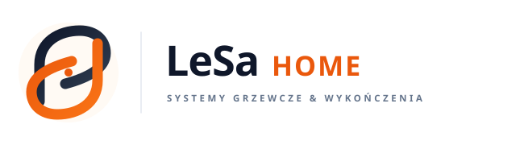
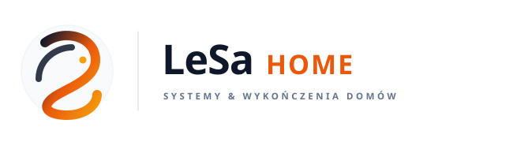
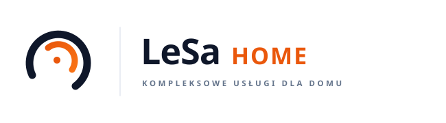

Spokojniejsze, lżejsze linie, harmonia organiczno-geometryczna, idealne proporcje i czytelność.

Cechy linii: Dwa idealnie zbalansowane, miękkie łuki (łuk stabilności w głębokim graficie + łuk ciepła i energii w terakocie). Lżejsza grubość linii (13px zamiast 24px), dzięki czemu znak jest wyciszony, elegancki i nieprzytłaczający.

Cechy linii: Ciągła, płynna wstęga o miękkich zaokrągleniach przypominająca kaligraficzny gest zen. Kojarzy się ze spokojem, komfortem termicznym i precyzyjną ciągłością prac.

Cechy linii: Dwa współśrodkowe, otwarte okręgi zen. Maksymalny minimalizm, bardzo techniczny, a jednocześnie kojący dla wzroku.
Jan Kowalski
+48 790 000 000 • kontakt@lesa-home.pl